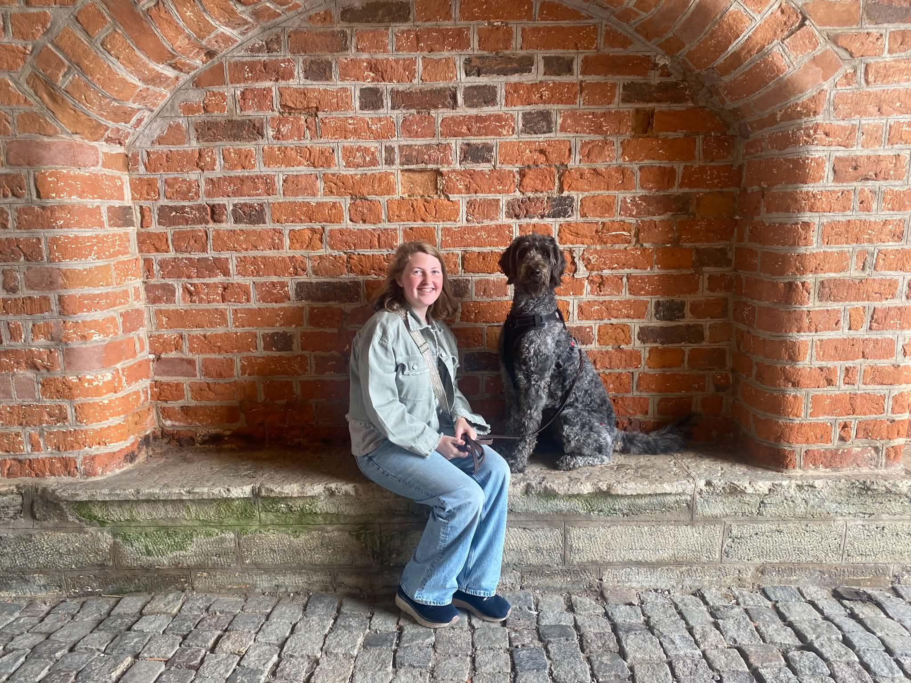

Hejsan!
Välkomna hit! På denna hemsidan kommer ni kunna läsa om mig, Kajsa Widén, och mitt stora intresse! Ni skulle också kunna ta kontakt med mig om ni skulle vilja!
Vem är jag?
Jo det ska jag berätta nu! Jag heter Kajsa Widén och är 23 år gammal.
Jag kommer från en liten by som heter Hindås, den ligger utanför Göteborg.
Jag utbildade mig till bagare och konditor i gymnasiet, vilket var väldigt roligt!
Efter gymnasiet så jobbade jag innom detta, och på ett av jobben hittade jag min numera sambo.
Nu under sommaren flyttade vi upp till Hemavan, för att säsongsjobba där.
Då såg jag att jag kom in på denna kursen!!
Så nu är jag lite i Hemavan och lite i Hindås, pluggar och myser med mina hundar!

Jag har en hund, som heter Leia, hon är en labradoodle!